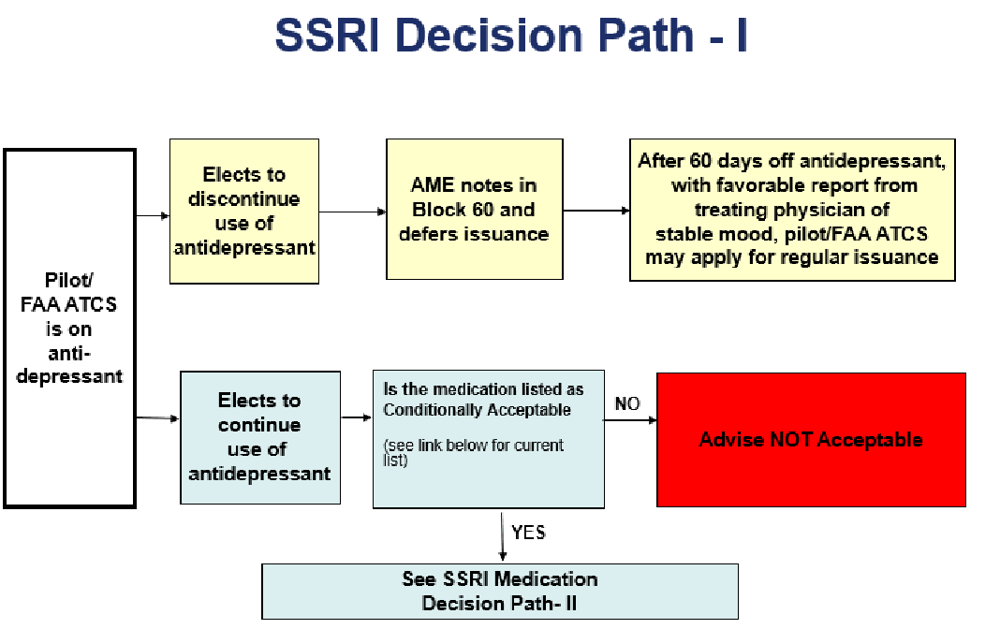
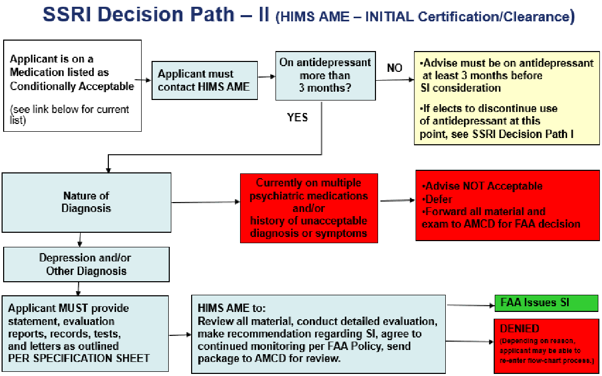
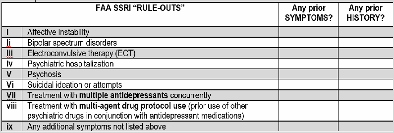
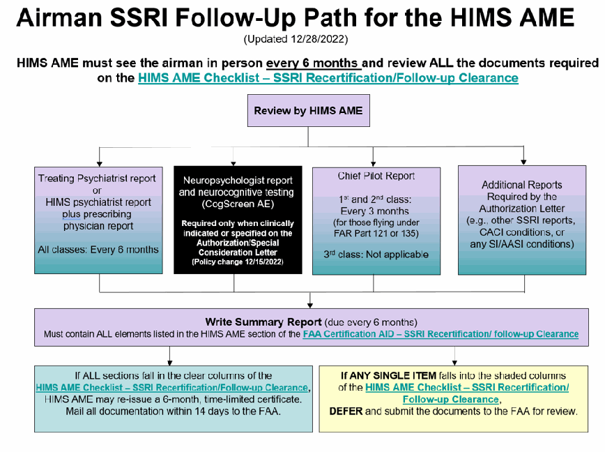
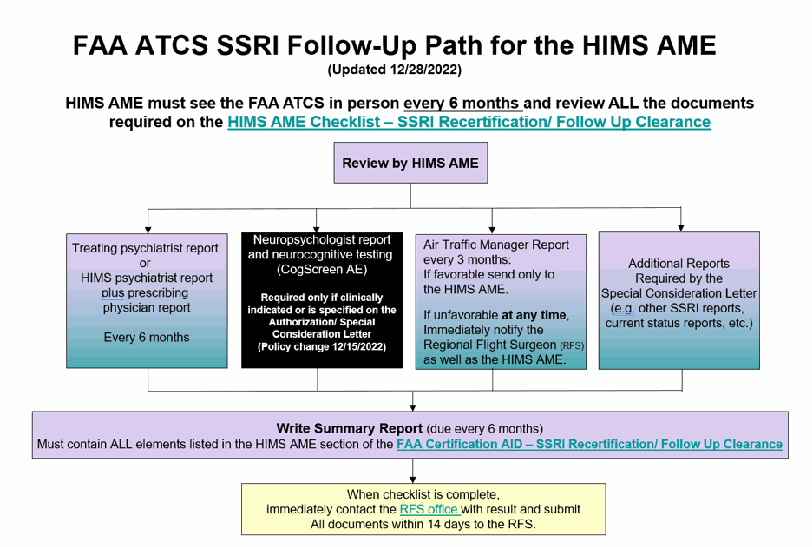

USE OF ANTIDEPRESSANT MEDICATIONS
(Updated 12/03/2025)
Antidepressants Protocol Expansion - Effective April 24, 2024:
Additional medications have been added as allowed for special issuance consideration, representing an additional class of antidepressant medications beyond SSRIs. This change, along with the addition of Wellbutrin (a Dopamine/Norepinephrine-Reuptake Inhibitor) on 05/31/2023, has resulted in the FAA’s SSRI Protocol being renamed the Antidepressant Protocol.
PLEASE NOTE: All references to SSRIs, SSRI Protocol, or SSRI program in existing checklists, worksheets, charts, or protocol pages in the AME Guide are considered encompassed in the Antidepressant Protocol and include all conditionally approved medications.
If you are an AIRMAN taking an SSRI – see Airman Information - SSRI INITIAL Certification
If you are an ATCS taking an SSRI – see FAA ATCS How to Guide
The FAA has determined that pilots or FAA Air Traffic Control Specialists (FAA ATCS) requesting medical certificates while being treated with one of several specific antidepressant medications may be considered. The Authorization decision is made on a case-by-case basis. The AME may not issue.
If the airman/FAA ATCS opts to discontinue use of the medication, the AME must notate in Block 60, Comments on History and Findings, on FAA Form 8500-8 and defer issuance. To reapply for regular issuance, the applicant must be off the SSRI for a minimum of 60 days with a favorable report from the treating physician indicating stable mood and no aeromedically significant side effects. See SSRI Decision Path I
An individual may be considered for an FAA Authorization of a Special Issuance (SI) or Special Consideration (SC) of a Medical Certificate (Authorization) if:
1.) The applicant has one of the following diagnoses:
- Major depressive disorder (mild to moderate) either single episode or recurrent episode;
- Dysthymic disorder;
- Adjustment disorder with depressed mood; or
- Any non-depression related condition for which the SSRI is used
2.) For a minimum of 3 continuous months prior, the applicant has been clinically stable as well as on a stable dose of medication without any aeromedically significant side effects and/or an increase in symptoms. If the applicant has been on the medication under 3 months, the AME must advise that 3 months of continuous use is required before SI/SC consideration.
3.) The medication used is one of the conditionally acceptable Antidepressant Medications . (single use only; not combined).
If the applicant is on a medication that is not listed in Antidepressant Medications , the Examiner must advise that the medication is not acceptable for SI/SC."
4.) The applicant DOES NOT have symptoms or history of:
- Psychosis
- Suicidal ideation
- Electro convulsive therapy
- Treatment with multiple SSRIs concurrently
- Multi-agent drug protocol use (prior use of other psychiatric drugs in conjunction with SSRIs.)
If applicant meets all of the above criteria and wishes to continue use of the medication, advise the applicant that he/she must be further evaluated by a Human Intervention Motivation Study (HIMS) AME.
Off Medication for 60 Days:
Initial Certification/Clearance:
Recertification/ Follow Up Clearance:
(Updated 08/27/2025)

See:
List of current Antidepressant Medications
Airman Information - SSRI INITIAL Certification
FAA Certification Aid - SSRI Initial Certification/Clearance
(Updated 12/03/2025)

List of current Antidepressant Medications
AIRMAN INFORMATION - SSRI INITIAL CERTIFICATION (Updated 08/26/2026)
Note: SSRI term updated to “Antidepressant”
If you are an FAA ATCS: See the FAA ATCS HOW TO GUIDE – SSRI below and contact your RFS
If you are an AIRMAN:
- 1. See your treating physician/therapist and/or psychiatrist and get healthy.
- 2. Do not fly in accordance with 14 CFR 61.53 until you have an Authorization from the FAA.
3. Select and contact a Human Intervention Motivation Study Aviation Medical Examiner (
) to work with you through the FAA process.
a. Provide the HIMS AME with a copy of ALL of your treatment records (no matter how many years have passed) from the time you:
- 1. Sought treatment for any condition that required an SSRI or psychiatric medication or
- 2. Had symptoms but were NOT on an SSRI
- b. Have a copy of your complete FAA file sent to the HIMS AME AND to a board certified psychiatrist if your treating physician is not a board certified psychiatrist. See Release of Information on how to request a copy of your file.
- c. At this time, make sure you also tell your HIMS AME about any other medical conditions you may have. They should be able to help you identify and collect the information that will be needed for a CACI/Special Issuance for these other conditions.
4. Print a copy of the
FAA CERTIFICATION AID – SSRI INITIAL Certification/Clearance
- a. Review what reports, providers, or testing will be required.
- b. Take the correct CERTIFICATION AID page to each of the required physicians or providers so they understand what their report must include for FAA purposes. (This should save time and decrease the letters asking for more information.)
- c. Make sure the providers specifically address in their report the “FAA SSRI “Rule-Outs.”
- 5. When you have been stable with no symptoms or side effects and on the same dose of medication for
3 months (this must be documented), you should meet with your HIMS AME to determine if it is appropriate to submit an INITIAL SSRI Special Issuance packet for FAA review.
***Remember to bring all documents to this evaluation, including information on any other condition you may have that requires a CACI or Special Issuance. ***
6. When your HIMS AME determines you are ready to submit a Special Issuance package they will:
- a. Review and complete the HIMS AME checklist ;
- b. Complete a new 8500-8 exam;
- c. Place notes in Block 60 stating that the SSRI evaluation is complete;
- d. Place notes in Block 60 regarding any other conditions the airman may have (Special Issuance/CACI);
- e. Submit the SSRI information and information on any other condition that may require a Special Issuance to the FAA.
- 7. When submitting information:
- The AME must submit your exam as DEFERRED.
- Coordinate with your AME to make sure that ALL ITEMS LISTED on the AME Checklist and a COMPLETE package is sent to the FAA at the address below WITHIN 14 DAYS.
- Partial or incomplete packages WILL NOT BE REVIEWED and will cause a DELAY IN CERTIFICATION.
AIRMAN - Initial Certification
FAA, Civil Aerospace Medical Institute, Building 13
Aerospace Medical Certification Division, Room 308 - AAM-300
PO Box 25082
Oklahoma City, OK 73125-9867
IMPORTANT NOTE: While your exam is under review, continue to submit your Air Traffic Manager (ATCS) reports EVERY 3 months AND your HIMS AME evaluations and treating psychiatrist reports EVERY 6 months. This will ensure the FAA has the most current information and will decrease wait time. If we do not have current information when we review your case, we will have to request it, which will slow down your certification review.
For RECERTIFICATION, see t he HIMS AME Checklist – SSRI Recertification/ Follow up Clearance .
FAA ATCS HOW-TO GUIDE – SSRI
(Updated 12/03/2025)
1. Notify Regional Flight Surgeon (RFS) of your diagnosis and treatment with a Selective Serotonin Reuptake Inhibitor (SSRI).
- In conjunction with the Regional Flight Surgeon’s office (RFS), select a Human Intervention Motivation Study Aviation Medical Examiner (HIMS AME).
- Sign a release to send a copy of your FAA ATCS medical file the HIMS AME.
- You will be placed in an Incapacitated Status.
- Any fees involved in obtaining medical tests and/or documentation to support a Special Consideration are the responsibility of the employee/applicant.
2. Contact the HIMS AME who will assist you in locating an acceptable psychiatrist and neuropsychologist for the required evaluations.
- You must be on a stable dose with of one of the approved SSRIs for three (3) months with no symptoms or side effects.
- Your condition must be well controlled before review for a Special Consideration.
- Provide your HIMS AME with all the items listed on the FAA Certification Aid – SSRI INITIAL Certification/Clearance.
- 3. When the above criteria have been met, you should meet with your HIMS AME for a face-to-face, in-office evaluation. The HIMS AME will prepare a report, recommendation, and submit an INITIAL SSRI Special Consideration packet to the RFS for determination.
- 4. RFS will process packet within the Office of Aerospace Medicine.
- 5. If Special Consideration is granted, the RFS will issue a time-limited clearance with Special Consideration for six (6) months.
For follow up Clearance, you must provide all items listed on the FAA Certification Aid – SSRI Recertification/ Follow Up Clearance.
HIMS AME Checklist - SSRI INITIAL Certification/Clearance
(Antidepressant) (Updated 08/26/2026)
Name: ____________________________________________ Airman MID or PI#: __________________________
Submit this checklist ALL supporting information for INITIAL SSRI consideration within 14 days of deferred exam to:
FAA ATCS
AIRMAN
FAA, Civil Aerospace Medical Institute, Building 13
Regional Flight Surgeon (RFS) office
Aerospace Medical Certification Division, Room 308
PO BOX 25082
Oklahoma City, OK 73125-9867
All numbered (#) items below refer to the corresponding section of the FAA CERTIFICATION AID - SSRI INITIAL Certification/Clearance.
Yes | No |
|---|
1. Airman/FAA ATCS statement and records
- Addresses/describes ALL items in FAA Certification Aid .……………………………………………….
- Is signed and dated ………………………………………………………………………………………….
- Provides all medical/treatment records related to mental health history.…………………...
2. HIMS AME FACE-TO-FACE, IN-OFFICE EVALUATION:
Yes | No |
|---|
- Describes ALL items in #1-7 of “HIMS AME” checklist…….……..……………………..………………
- Verifies the airman/ FAA ATCS has been on the same medication at the same dose for a minimum of 3 months………….………………………………………………….....................................
- Is signed and dated ………………………………………………………………………………………….
- Copies of all reports have been submitted to the FAA or are enclosed with this checklist ………….
- Any other condition(s) that would require Special Issuance (SI)/Special Consideration (SC). Do not include CACI qualified condition(s)………....................................................................................
- List conditions:
3. TREATING PHYSICIAN (non-psychiatrist) REPORT (If the treating physician is a
Board Certified Psychiatrist, check N/A and skip to #4.):
N/A | Yes | No |
|---|
- Verifies the airman/FAA ATCS has been on the same medication at the same dose for a minimum of 3 months …………………………………………………...........................................
- Is signed and dated …………………………………………..……………………………………….
4. Board Certified PSYCHIATRIST REPORT:
Yes | No |
|---|
- Describes ALL items in #1-8 of PSYCHIATRIST requirements (including FAA SSRI “Rule-Outs.”)
- Verifies the airman/FAA ATCS has been on the same medication at the same dose for a minimum of 3 months.........................................................................................................................
- Is signed and dated…………………………………………………………………………………………..
5. NEUROPSYCHOLOGIST REPORT:
Yes | No |
|---|
- Describes ALL items in #1-8 of the NEUROPSYCHOLOGIST requirements ………………………..
- CogScreen-AE computerized report is attached …..…………………………………………………….
- Additional neuropsychological testing (if performed or required) score summary sheet is attached.
- Is signed and dated ………………………………………………..………………………………………..
N/A | Yes | No |
|---|
6. ADDITIONAL REPORTS
- Air Traffic Manager (ATM) for FAA ATCS (N/A for pilots)............................………….………
- SSRI related (drug testing, therapy reports, etc.) …...…………………………………………..
- Reports from other providers or for non-SSRI conditions that may require SI or SC.........….
HIMS AME Signature___________________________ Date of Evaluation_______________
IF ANY ITEMS ARE MISSING OR ARE INCOMPLETE, CERTIFICATION WILL BE DELAYED.
IMPORTANT NOTE: While your exam is under review, continue to submit your Air Traffic Manager reports (ATCS) EVERY
3 months AND your HIMS AME evaluations and treating psychiatrist reports EVERY 6 months. This will ensure the FAA has the most current information and will decrease wait time. If we do not have current information when we review your case, we will have to request it, which will slow down your certification review.
FAA CERTIFICATION AID – SSRI INITIAL Certification (Page 1 of 5)
(Updated 08/26/2026)
The following information is to assist your treating physician/ provider who may be unfamiliar with FAA medical certification/clearance requirements. It lists the ABSOLUTE MINIMUM information required by the FAA to make a determination on a medical certificate for airmen or clearance for FAA ATCS. You should strongly consider taking a copy to each evaluator so they understand what specific information is needed in their report to the FAA. If each item is not addressed by the corresponding provider, there may be a delay in the processing of your medical certification or clearance until that information is submitted. Additional information such as clinic notes or explanations should also be submitted as needed. All reports must be CURRENT (within the last 90 days) for FAA purposes.
REPORT FROM | MUST SPECIFICALLY ADDRESS OR STATE THE FOLLOWING (SSRI INITIAL Certification/Clearance Evaluation) |
|---|---|
AIRMAN or FAA ATCS | 1. A typed statement, in your own words, describing your mental health history, antidepressant use, and any other treatment. At a minimum, you must include the following information:
f. Describe your current status: current medication dose, how long you have been on it, and how you function both on and off the medication. 2. Sign and date your statement. 3. Provide copies of all of your medical/treatment records related to your mental health history (to include any treatment records for past related symptoms where you were NOT on SSRI as well as from the date you began treatment to the present) and sign two release forms * for the FAA to release a complete copy of your FAA medical file to your HIMS AME and to a board certified psychiatrist (if your treating physician is not a psychiatrist). *For ATCS release form information, contact your RFS office . |
HIMS AME Must be in letter/report format. Due to length and detail required, we cannot accept Block 60 notes for this section. |
3. Medication verification
4. Summarize your aeromedical impression and evaluation as a HIMS AME based on the face-to-face evaluation AND review of the supporting documents. a. If you do not agree with the supporting documents, or if you have additional concerns not noted in the documentation, please discuss your observations or concerns. b. Review and specifically comment on whether or not the airman/FAA ATCS has any of the FAA SSRI “Rule-Outs” (e.g., suicide attempt, etc. See the table on page 3 of this document). 5. Special Issuance/ Consideration Recommendation
6. Agreement to immediately notify the FAA (for Airmen: 405-954-4821; for FAA ATCS contact the RFS office ) if there is:
7. Additional conditions
|
FAA CERTIFICATION AID – SSRI INITIAL Certification (Page 2 of 5)
(Updated 08/26/2026)
The following information is to assist your treating physician/ provider who may be unfamiliar with FAA medical certification/clearance requirements. It lists the ABSOLUTE MINIMUM information required by the FAA to make a determination on a medical certificate for airmen or clearance for FAA ATCS. You should strongly consider taking a copy to each evaluator so they understand what specific information is needed in their report to the FAA. If each item is not addressed by the corresponding provider, there may be a delay in the processing of your medical certification or clearance until that information is submitted. Additional information such as clinic notes or explanations should also be submitted as needed. All reports must be CURRENT (within the last 90 days) for FAA purposes.
REPORT FROM | MUST SPECIFICALLY ADDRESS OR STATE THE FOLLOWING (SSRI INITIAL Certification/Clearance Evaluation) |
|---|---|
TREATING PHYSICIAN Use this section if the person prescribing your medication is NOT a board certified psychiatrist. (You will also have to submit an evaluation from a board certified psychiatrist - see next section.) IF the physician prescribing your medication is a BOARD CERTIFIED PSYCHIATRIST, you do not need to submit this “Treating Physician” section. Go to “Psychiatrist” section below. | A Current detailed evaluation report that summarizes clinical findings and status of how the airman/FAA ATCS is doing. At a minimum, it must include the following: 1. Qualifications: State your board certifications and specialty. 2. History: a. Review the overall symptom and treatment history, with a timeline of evaluations and treatments (including start and stop dates). b. Discuss the severity of the condition and any relapse/recurrence. 3. Medication
4. Diagnosis: a. Specify the current diagnosis (es). b. Discuss the severity of the condition 5. Summary, Treatment and follow-up recommendations:
6. Agreement to immediately notify the FAA (for airmen: 405-954-4821; for FAA ATCS, contact the RFS office ) if there are any: changes in the airman/FAA ATCS’s condition, dosage, change in medication or if the medication is stopped. |
FAA CERTIFICATION AID – SSRI INITIAL Certification (Page 3 of 5)
REPORT FROM | MUST SPECIFICALLY ADDRESS OR STATE THE FOLLOWING (SSRI INITIAL Certification/Clearance Evaluation) |
|---|---|
PSYCHIATRIST Must be a board certified psychiatrist (If your treating physician IS a board- certified psychiatrist, you should submit this section.) | A Current detailed evaluation report that summarizes clinical findings and status of how the airman/FAA ATCS is doing. At a minimum, it must include the following: 1. Qualifications: State your board certifications, specialty, and any other pertinent qualifications. 2. Records review: What documents were reviewed? a. Specify if using your own clinic notes and/or notes from other providers or hospitals. b. Verify if you were provided with and reviewed a complete copy of the airman/FAA ATCS’s FAA medical file. 3. History: a. Review the overall symptom and treatment history, with a timeline of evaluations and treatments (including start and stop dates). b. Discuss the severity of the condition and any relapse/recurrence. c. Each of the FAA SSRI “Rule-Outs” below MUST be individually addressed. The report must specifically detail if there have been any symptoms or any history of the following: 4. Medication
5. Diagnosis: a. Specify the current diagnosis (es). b. Discuss any prior diagnostic questions or issues and explain why/how these are no longer under consideration or have been ruled-out. c. Discuss the severity of the condition, both current and historically. 6. Summary, Treatment and follow-up recommendations:
7. Agreement to immediately notify the FAA if there is any changes in the airman/FAA ATCS’s condition, dosage, change in medication or if the medication is stopped. (For airmen: 405-954-4821; for FAA ATCS: contact the RFS office ) 8. Submit copies of all treatment records such as clinic or hospital notes for any period of time which the airman/FAA ATCS has sought treatment or taken medication. (You do not need to submit any records received from the FAA.) |

FAA CERTIFICATION AID – SSRI INITIAL Certification (Page 4 of 5)
(Updated 08/26/2026)
The following information is to assist your treating physician/ provider who may be unfamiliar with FAA medical certification/medical clearance requirements. It lists the ABSOLUTE MINIMUM information required by the FAA to make a determination on a medical certificate for airmen or medical clearance for FAA ATCS. You should strongly consider taking a copy to each evaluator so they understand what specific information is needed in their report to the FAA. If each item is not addressed by the corresponding provider, there may be a delay in the processing of your medical certification or clearance until that information is submitted. Additional information such as clinic notes or explanations should also be submitted as needed. All reports must be CURRENT (within the last 90 days) for FAA purposes.
REPORT FROM | MUST SPECIFICALLY ADDRESS OR STATE THE FOLLOWING (SSRI INITIAL Certification/Clearance Evaluation) |
|---|---|
NEUROPSYCHOLOGIST CogScreen Results AND Neurocognitive evaluation | The neuropsychologist report MUST address: 1. Qualifications: State your certifications and pertinent qualifications. 2. Records review: What documents were reviewed, if any? a. Specify clinic notes and/or notes from other providers or hospitals. b. Verify if you were provided with and reviewed a complete copy of the airman/FAA ATCS’s FAA medical file. 3. History: Items from the clinical, educational, training, social, family, legal, medical, or other history pertinent to the context of the neuropsychological testing and interpretation. 4. Testing results: a. CogScreen-AE information:
b. CogScreen-AE results with specific review of and discussion when any threshold values exceeded:
c. Results of any additional focused testing or a comprehensive test battery 5. Interpretation: a. The overall neurocognitive status of the airman/FAA ATCS b. Clinical diagnosis (es) suggested or established base on testing (if any). c. Discuss any weaknesses or concerning deficiencies that may potentially affect safe performance of pilot or aviation safety-related duties (if any). d. Discuss rationale and interpretation of any additional focused testing or comprehensive test battery that was performed. e. Any other concerns. 6. Recommendations: additional testing, follow-up testing, referral for medical evaluation (e.g., neurology evaluation and/or imaging), rehabilitation, etc. 7. Agreement to immediately notify the FAA (for airmen: 405-954-4821; for FAA ATCS contact the RFS office ) if there are any changes or deterioration in the airman/FAA ATCS’s psychological status or stability. 8. Submit the CogScreen-AE computerized summary report (approximately 13 pages) and summary score sheet for any additional testing (if performed). |
FAA CERTIFICATION AID – SSRI INITIAL Certification (Page 5 of 5)
(Updated 08/26/2026)
The following information is to assist your treating physician/ provider who may be unfamiliar with FAA medical certification/medical clearance requirements. It lists the ABSOLUTE MINIMUM information required by the FAA to make a determination on a medical certificate for airmen or medical clearance for FAA ATCS. You should strongly consider taking a copy to each evaluator so they understand what specific information is needed in their report to the FAA. If each item is not addressed by the corresponding provider, there may be a delay in the processing of your medical certification or clearance until that information is submitted. Additional information such as clinic notes or explanations should also be submitted as needed. All reports must be CURRENT (within the last 90 days) for FAA purposes.
REPORT FROM | MUST SPECIFICALLY ADDRESS OR STATE THE FOLLOWING (SSRI INITIAL Certification/Clearance Evaluation) |
|---|---|
AIR TRAFFIC MANAGER (ATM) FAA ATCS employees FAA ATCS Applicant for Hire – Not applicable | Report should address: For FAA ATCS:
For Pilots: Chief pilot reports no longer required. |
REPORTS FROM ADDITIONAL PROVIDERS OR REPORTS REGARDING OTHER CONDITIONS | Supplemental reports (if any) that may be related to the condition for which the SSRI is prescribed:
Special Issuance/ Special Consideration conditions: The airman/FAA ATCS should bring reports and documentation for any other conditions that may require Special Issuance/Special Consideration to the HIMS AME for review. CACI conditions (airman only): The airman should bring reports or other documentation listed on the CACI worksheet to the HIMS AME for review. |
SSRI RECERTIFICATION/FOLLOW-UP CLEARANCE
(Updated 12/28/2022)
Policy Change in SSRI Program Cognitive Testing Requirements for Renewal of Special Issuance:
After careful study of data from 425 pilots in the SSRI Program, the FAA has determined that the neuropsychologist evaluation and routine CogScreen-AE administration are no longer necessary for RENEWAL of an SSRI special issuance, except when clinically indicated or specified on the Authorization/Special Consideration Letter. This policy change does NOT affect initial evaluations and the current AME checklists and Specifications for Neuropsychological Evaluations should still be used. This policy is effective immediately (12/15/2022).
Frequently Asked Questions (FAQs)
- 1. Does the policy change apply to all classes of pilots and ATCS?
Yes.
- 2. Is a Neuropsychology follow up evaluation still required?
No. This policy change eliminates both the neuropsychologist evaluation and CogScreen for follow up evaluations (unless the pilot/ATCS receives a specific request for follow-up).
- 3. My pilot/ATCS is currently on an Authorization for the SSRI program. Their current Authorization letter states they need CogScreen. Can I issue without a follow-up CogScreen and Neuropsychology evaluation based on the 12/15/2022 policy change?
Yes. If all other items of the HIMS AME Checklist – SSRI Recertification/Follow-Up Clearance are in the clear column and they are otherwise qualified, issue with a 6-month time limitation. Submit all information to the FAA for review.
- 4. What will happen when the case is reviewed at the FAA?
- All SSRI cases are reviewed by a FAA psychiatrist.
- As each case is reviewed, a new Authorization letter may be generated.
In most cases, the requirement for a follow-up CogScreen will be removed.
- For a small number of cases, a follow up CogScreen may be required. This information will be on the Authorization Letter.
- 5. If my pilot/ATCS receives a letter asking for a new CogScreen, can they fly in the meantime?
Yes, if otherwise qualified. There will be some overlap in letters that were sent out prior to 12/15/2022 which asked for a follow-up CogScreen. If the pilot/ATCS has already completed the CogScreen from the previous letter, the AME should review and send it to the FAA.
If the pilot/ATCS has provided all items to the HIMS AME except the CogScreen and Neuropsychology evaluation (for follow-up SSRI Authorization), the AME can issue if all items are in the clear column of the HIMS AME Checklist – SSRI Recertification/ Follow-Up Clearance .
- 6. Is there a possibility that the aviator will be grounded due to the results of the CogScreen results?
If the results were severe and were thought to identify significant cognitive deficits, the Special Issuance would be temporarily withdrawn while further evaluation is completed.
- 7. Does the policy change apply to pilots/ATCS who are not yet on an Authorization for SSRI?
Not at this time. There is no change to the current INITIAL Authorization requirements.

________________________________________________________________________

Note: See important update in black boxes above. Neuropsychologist report and routine CogScreen-AE administration are no longer necessary for RENEWAL of an SSRI special issuance, except when clinically indicated or specified on the Authorization/Special Consideration Letter. This policy change does NOT affect initial evaluations and the current AME checklists and neuropsychological protocol should still be used. (Policy change 12/15/2022)
HIMS AME Checklist - SSRI Recertification /Follow Up Clearance (Updated 08/26/2026)
[Note: SSRI now called Antidepressant]
Name ____________________________ Airman PI#____________________________
Instructions to the HIMS AME:
- Address the following items based on your in-office exam and documentation review;
- Submit this Checklist (signed and dated by the HIMS AME); AND include supporting documentation reviewed to complete this Checklist (including your HIMS AME report) within 14 days to:
AIRMAN
FAA, Civil Aerospace Medical Institute, Bldg. 13
FAA ATCS: Regional Flight Surgeon (RFS) office
Aerospace Medical Certification Division, Room 308 - AAM-300
PO Box 25082
Oklahoma City, OK 73125-9867
I reviewed the airman’s SSRI Authorization or the FAA ATCS’s Special Consideration Letter dated: ________________
(Date of Letter)
- 1. HIMS AME FACE-TO-FACE, IN OFFICE EVALUATION: Required EVERY 6 months for ALL CLASSES
No | Yes |
|---|
- Interval visit summaries (if any) are unfavorable or reflect concerns………………………………………
- Any concerns about the airman/FAA ATCS’s current psychiatric status based on your clinical interview, evaluation, and review of reports? ………………………………………………….....................
- Any new psychiatric conditions identified or change in medication or dose during this period? ............
- Any abnormal physical exam or mental exam findings? ……………………………………………………
- Any NEW condition(s) that would require Special Issuance/Consideration? (Do not include any new CACI qualified condition.) ……………………………………………………………………………………….
- 2. TREATING PSYCHIATRIST REPORT: Required EVERY 6 months for ALL CLASSES
OR
HIMS PSYCHIATRIST REPORT plus PRESCRIBING PHYSICIAN REPORT
Yes | No |
|---|
- Report(s) is/are favorable with no anticipated or interim treatment changes ……………………………..
- The airman/FAA ATCS is on the same medication at the same dose stated in the Authorization letter or Special Consideration Letter.………...........................................................................................
- 3. NEUROPSYCHOLOGIST REPORT and routine CogScreen-AE administration are no longer necessary for renewal of an SSRI special issuance, except when clinically indicated or specified on the Authorization Letter /Special Consideration Letter. (Policy change 12/15/2022)
N/A | Yes | No |
|---|
If indicated/specified, answer the following items:
- Concludes NO aeromedically significant cognitive deficits or adverse changes? ....................................................
- CogScreen is attached? ……………………………………………………………………………………………………..
- Additional neuropsych testing (if performed or required) is attached? .....................................................................
4. (ATCS only) AIR TRAFFIC MANAGER (ATM) REPORT(S): Required EVERY 3 months
N/A | Yes | No |
|---|
(Mark N/A for pilots) Reports are favorable? .........................…………………………………………...
If any report is unfavorable immediately FAA RFS office .
5. ADDITIONAL REPORTS required by Authorization letter
N/A | Yes | No |
|---|
- SSRI-related (drug testing, therapy reports, etc.) reports are favorable…………….................
- Reports required for other non-SSRI conditions meet Authorization requirements……………
Yes | No |
|---|
6. I have no other concerns about this airman/FAA ATCS and I recommend re-certification for Special Issuance/Consideration……………………………………………………………………………………….................
______________________________ __________________________________
HIMS AME Signature Date of Evaluation
For Airman: If ALL items fall into the clear column, the AME may issue with the time limitation specified in the Authorization Letter or Special Consideration Letter. If Any Single Item falls into the shaded column, the AME MUST DEFER or contact the FAA and Explain in the HIMS report. For FAA ATCS: When Checklist is complete, immediately contact RFS with results and submit all documents within 14 days.
FAA CERTIFICATION AID – SSRI Recertification
Page 1 of 2 (Updated 08/26/2026)
The following information is to assist your treating physician/ provider who may be unfamiliar with FAA medical certification requirements. It lists the ABSOLUTE MINIMUM information required by the FAA to make a determination on a medical certificate for airmen or medical clearance for FAA ATCS. You should strongly consider taking a copy to each evaluator so they understand what specific information is needed in their report to the FAA. If each item is not addressed by the corresponding provider there may be a delay in the processing of your medical certification until that information is submitted. Additional information such as clinic notes or explanations should also be submitted as needed. All reports must be CURRENT (within the last 90 days) for FAA purposes.
REPORT FROM | REQUIRED INTERVAL | MUST SPECIFICALLY ADDRESS OR STATE THE FOLLOWING (SSRI Recertification/ Follow Up Clearance) |
|---|---|---|
HIMS AME All classes and FAA ATCS | Every 6 months or as stated in the airman Authorization letter Or FAA ATCS Special Consideration Letter | 1. Must be a face-to-face, in person evaluation every 6 months. 2. Summarize findings from additional interim evaluations that were performed by any other venue (phone/ video/ email), either at the AME’s discretion or as required by the Authorization or Special Consideration Letter (every 1-3 months). 3. Summarize your aeromedical impression and evaluation as a HIMS AME based on the face-to-face evaluation AND review of the supporting documents. 4. If you do not agree with the supporting documents, or if you have additional concerns not noted in the documentation, please discuss your observations or concerns. 5. State if the airman/FAA ATCS meets all the requirements of the Authorization Letter/Special Consideration Letter or describe why they do not. 6. Review and comment if there has been any change in the dose, type, or discontinuation of medication stated in the Authorization Letter/ Special Consideration Letter. 7. Do you recommendation continued Special Issuance/Special Consideration in this airman/FAA ATCS? 8. Agreement to continue to serve as the airman/FAA ATCS’s HIMS AME and follow this airman/FAA ATCS per FAA policy. 9. Agreement to immediately notify the FAA (for airmen: 405-954-4821; for FAA ATCS contact the RFS office ) if there is any change in condition, deterioration in psychiatric status or stability, if the medication dosage has changed, or there is a plan to reduce or discontinue any medication. 10. Using the HIMS AME Checklist –SSRI Recertification/ Follow Up Clearance , comment on any items that fall into the shaded category. 11. Submit the SSRI check list, your HIMS AME written report, and all required supporting documentation that you reviewed with your package. |
PSYCHIATRIST INTERIM HISTORY REPORT (or treating physician as noted in the Authorization letter) If the prescribing physician is not a psychiatrist, items #2-7 must be submitted from the prescribing physician IN ADDITION TO the psychiatrist report. | Every 6 months or per Authorization Letter Or FAA ATCS Special Consideration Letter | 1. Summarize clinical findings and status of how the airman/FAA ATCS is doing. 2. Have there been any new symptoms or hospitalizations? 3. Did a change in dose or medication occur or is one recommended or anticipated? 4. Have there been any clinical concerns or changes in treatment plan? 5. Has the clinical diagnosis changed? 6. Agreement to immediately notify the FAA (for Airmen: 405-954-4821; for FAA ATCS: contact the RFS office ) if there is any change in the airman/FAA ATCS’s condition, dosage, change in medication or if the medication is stopped. 7. Interval treatment records such as clinic or hospital notes should also be submitted. |
FAA CERTIFICATION AID – SSRI Recertification
Page 1 of 2 Updated 08/26/2026)
The following information is to assist your treating physician/ provider who may be unfamiliar with FAA medical certification requirements. It lists the ABSOLUTE MINIMUM information required by the FAA to make a determination on a medical certificate for airmen or medical clearance for FAA ATCS. You should strongly consider taking a copy to each evaluator so they understand what specific information is needed in their report to the FAA. If each item is not addressed by the corresponding provider there may be a delay in the processing of your medical certification until that information is submitted. Additional information such as clinic notes or explanations should also be submitted as needed. All reports must be CURRENT (within the last 90 days) for FAA purposes.
REPORT FROM | REQUIRED INTERVAL | MUST SPECIFICALLY ADDRESS OR STATE THE FOLLOWING (SSRI Recertification/ Follow Up Clearance) |
|---|---|---|
CLINICAL PSYCHOLOGIST OR NEUROPSYCHOLOGIST* *Neuropsychologist report and routine CogScreen-AE administration are no longer necessary for RENEWAL of an SSRI special issuance, except when clinically indicated or specified on the Authorization/Special Consideration Letter. (Policy change 12/15/2022) | 1st and 2nd class: Every 12 months or per Authorization Letter FAA ATCS: Every 12 months or per the Special Consideration Letter 3rd class: Every 24 months or per Authorization Letter | CogScreen information results that must be addressed in the narrative: 1. Specify the norm used:
2. Specify Session Number administered (listed on Page 1 and Page 2 of printout). Session 1 for initial test only; retests should be Session 2 or incrementally higher. Clinical report MUST specifically comment on the following CogScreen items. If they have changed or are not normal, the narrative must discuss these findings and if they are of any clinical or aeromedical concern: 1. Any increase in LRPV (page 4) 2. Taylor Factor scores (page 5) 3. Base Rate for Speed, Accuracy, or Process (page 4) The psychologist or neuropsychologist report should also specifically mention: 1. The overall neurocognitive status of the airman/FAA ATCS. 2. Any adverse neurocognitive findings or a decline in condition. 3. If additional focused neuropsych testing is/was required or recommended. If any additional testing was performed, the report must explain why the testing was performed, the results, and how that fits into the airman/FAA ATCS’s overall neurocognitive status. 4. Any other concerns or absence of concerns. 5. Agreement to immediately notify the FAA (for Airmen: 405-954-4821; for FAA ATCS: contact the RFS office ) if there is any change or deterioration in the psychological status or stability in the airman/FAA ATCS’s condition. 6. Submit the entire CogScreen report (approximately 13 pages) and any additional testing (if performed). |
AIR TRAFFIC MANAGER (ATM) FAA ATCS employee ATCS Applicant for hire – Not applicable | FAA ATCS: Every 3 months (bring cumulative reports to AME evaluation every 6 months.) | Report must address: For FAA ATCS:
For Pilots: Chief pilot reports no longer required. |
ADDITIONAL PROVIDERS Additional reports for SSRI or any other condition noted in Authorization or FAA ATCS Special Consideration Letter | Every 6 months or per Authorization or FAA ATCS Special Consideration Letter | Varies. See the Authorization Letter or Special Consideration Letter. Include any drug testing results, therapist follow up reports, social worker reports, etc. If the prescribing physician is NOT a psychiatrist, reports from the prescribing physician and their clinic office notes must be submitted in addition to the required psychiatric evaluations (see above). If the airman/FAA ATCS has other non-SSRI conditions that require a special issuance/consideration, those reports should also be submitted according to the Authorization or FAA ATCS Special Consideration Letter. |
HIMS AME CHANGE REQUEST
(Updated 09/25/2024)
The Authorization for Special Issuance requires that individuals DO NOT change his/her HIMS AME without prior FAA approval.
In rare cases in which the HIMS AME listed on the Authorization Letter is no longer available to the individual (ex: HIMS AME retires, is no longer a HIMS AME, is deceased, or the individual or HIMS AME relocates to a new state, etc.), a change request is required.
The FAA requires the following to consider any request:
1. The INDIVIUAL must send a written request to the FAA (address below) describing why there is a requirement to work with the new requested/prospective HIMS AME.
In addition, the individual must give FAA Office of Aerospace Medicine authorization to release a complete copy of their FAA Medical File to the new requested/prospective HIMS AME in advance of the new requested/prospective HIMS AME’s agreement to monitor the individual. For information on how to accomplish this, see Requesting Medical Records .
2. The CURRENT HIMS AME must write a closeout status report describing why the change is requested and agree to release HIMS AME monitoring services to the new requested/prospective HIMS AME (list the name of new HIMS AME).
The closeout report must note if there are any concerns regarding the individual’s compliance.
If the (current) HIMS AME is deceased, his/her office staff should contact AAM-200 Manager, Medical Specialties in Washington, DC at (202) 267-8035.
3. NEW REQUESTED/PROSPECTIVE HIMS AME must review the individual’s records and, in writing, agree to monitor the individual in accordance with the terms of the FAA SI Authorization Letter.
The FAA will review the submitted information, and IF the change is approved*, will send an updated Authorization Letter with the new HIMS AME information to the individual.
Submit requests to:
Federal Aviation Administration
Civil Aerospace Medical Institute, Bldg. 13
Aerospace Medical Certification Division, AAM-313
PO Box 25082, Oklahoma City, OK 73125-9867
*NOTE: Submission of a HIMS AME Change Request does not automatically guarantee approval of the request.
ATTENTION-DEFICIT/HYPERACTIVITY DISORDER (ADHD)*
AND/OR USE OF ADHD MEDICATIONS
All Classes
(Updated 10/30/2024)
DISEASE/CONDITION | EVALUATION DATA | DISPOSITION |
|---|---|---|
A. NO treatment or use of ADHD medication (for any reason) in past four (4) years AND NO symptoms in past four (4) years AND NO instability in academic, occupational, or social functioning within the last four (4) years AND NO other psychiatric condition(s) or diagnosis (current or historical). Exception: Anxiety, Depression, and Related Conditions can use this row if the individual qualifies for the Anxiety, Depression, and Related Conditions Fast Track Pathway. | The individual will need to see a psychologist or neuropsychologist for records review and evaluation*. This section may be performed in person or virtually (in compliance with State and Federal regulations). *Note: Records review and evaluation can be done virtually; however, the evaluation component must be face-to-face on screen, not audio only.
If the FAA ADHD Summary is provided, all items are in the “NO” category, and the AME has NO concerns regarding this individual: Note: If FAA ADHD Summary is not provided, any “YES” answers, any AME concerns, or unable to verify history, go to Row B. | ISSUE Summarize this history, annotate Block 60 “Meets ADHD Fast Track requirements.” Submit ALL the following to the FAA: 1. Completed and signed FAA ADHD Summary; 2. Actual clinical visit report (not patient portal notes) from the psychologist or neuropsychologist ; and 3. Copies of ALL supporting documents reviewed. |
B. Symptoms, treatment or use of ADHD Medication (for any reason), or instability in past four (4) years OR History of any psychiatric condition(s) or diagnosis (current or historical) including Anxiety, Depression, and Related Conditions which do not qualify for the Anxiety, Depression, and Related Conditions Fast Track Pathway. OR AME and/or HIMS Neuropsychologist have any concerns | This row requires HIMS neuropsychology evaluation and testing to identify the presence of aeromedically significant ADHD.
Medication: If the individual stopped taking ADHD medication(s), they must be off the medication(s) for 90 days before testing and evaluation. | DEFER Submit the information to the FAA. |
C. Currently taking ADHD medication (for any reason), including PRN use OR Medication discontinued within the past 90 days OR Current symptoms | Taking ADHD medication or symptoms of ADHD are incompatible with aviation safety. Submit the following for FAA review: The most recent detailed, clinical progress note from the prescribing physician which identifies the diagnosis and treatment plan. If the treating physician determines the medication can be safely discontinued, the individual should be off the medication a minimum of 90 days before obtaining the Standard Track - FAA ADHD Evaluation See Row B. | DEFER Submit the information to the FAA |
*ADHD has replaced the former name Attention-Deficit Disorder (ADD).
ANXIETY, DEPRESSION, AND RELATED CONDITIONS
All Classes
(Updated 06/26/2024)
Row A on the following Anxiety, Depression, and Related Conditions Disposition Table allows only TWO of the following:
Anxiety
- Unspecified anxiety
- Generalized Anxiety Disorder
- Situational anxiety (also called adjustment disorder with anxiety)
- Social Anxiety Disorder
Depression
- Unspecified depression
- Postpartum depression
- Situational depression* (also called adjustment disorder with depressed mood)
*For Situational Depression - AME can also use the Situational Depression Disposition Table .
- Situational Anxiety and Depression (adjustment disorder with mixed anxiety and depressed mood)
Other
- Obsessive Compulsive disorder (OCD)
- Post Traumatic Stress Disorder (PTSD)
- V code^ (DSM)/Z code (ICD-10) table items
Note^: V code (DSM)/Z code (ICD-10) table includes but is not limited to:
- Uncomplicated Bereavement;
- Relationship distress with spouse or intimate partner;
- Parent-Child relational problem; and/or
- Phase of Life Problem (problems adjusting to major life transitions such as newly retired, getting married, empty-nest, new career, becoming a parent, etc.
Review ALL Row A criteria including psychotherapy (past and current) and medication history.
For conditions not listed above, see Row B.
ANXIETY, DEPRESSION, AND RELATED CONDITIONS
All Classes
(Updated 06/26/2024)
DISEASE/CONDITION | EVALUATION DATA | DISPOSITION | |
|---|---|---|---|
A. Up to TWO listed conditions treated with any combination of:
ACCEPTABLE DIAGNOSES: Uncomplicated: 1. Anxiety:
2. Depression:
| The AME should gather information regarding the diagnosis, severity, treatment, symptoms, and address ALL of the questions on the Anxiety, Depression, and Related conditions Decision Tool for the AME. Note: For individuals who were deferred, but now may possibly meet all Row A criteria, use the FAST TRACK PATHWAY Decision Tool for Currently Deferred Cases . If all items on the decision tool are in the clear, “NO column, the AME may: DO NOT USE THIS ROW IF (go to Row B):
NOTE^: V code (DSM)/Z code (ICD-10) table includes:
| ISSUE Summarize this history, diagnosis, and annotate Block 60: “Discussed the history of [insert diagnosis here], no positives to screening questions, and no concerns.” If any “YES” answers OR Any AME concerns: DEFER | 3. Other:
Note*: For Situational Depression - AME can use this table or the Situational Depression Disposition Table . |
B. All Others
OR
OR
OR
AND/OR
| Submit a current, detailed Clinical Progress Note generated from a clinic visit with the treating physician or specialist no more than 90 days before the AME exam. | DEFER Annotate (elements or findings) in Block 60. |
ANXIETY, DEPRESSION, AND RELATED CONDITIONS
FAST TRACK PATHWAY Decision Tool for Current Deferred Cases
ALL CLASSES (Updated 09/25/2024) – (Page 1 of 2)
AME instructions: If a pilot was previously deferred for anxiety, depression, or related conditions, they MAY now qualify for consideration per Row A of the Anxiety, Depression, and Related Conditions Disposition Table (published 05/29/2024). Complete the following and upload into AMCS:
APPLICANT NAME:_________________________________________________ BIRTHDATE:__________________________
APPLICANT ID#:___________________________________________________ PI#:__________________________________
NO | YES* |
NO | YES* |
NO | YES* |
NO | YES* |
NO | YES* |
A. Diagnosis: Does the individual have 3 or more of the following conditions/ diagnosis as the reason for deferral?
Circle all conditions diagnosed:
- Obsessive Compulsive disorder (OCD)
- Post Traumatic Stress Disorder (PTSD)
- V code^ (DSM)/Z code (ICD-10) table items
- Uncomplicated Bereavement;
- Relationship distress with spouse or intimate partner;
- Parent-Child relational problem; and/or
- Phase of Life Problem (problems adjusting to major life transitions such as newly retired, getting married, empty-nest, new career, becoming a parent, etc.
Anxiety
- Unspecified anxiety
- Generalized Anxiety Disorder
- Situational anxiety (also called adjustment disorder with anxiety)
- Social Anxiety Disorder
Depression
- Unspecified depression
- Postpartum depression
- Situational depression* (also called adjustment disorder with depressed mood)
- Situational Anxiety and Depression (adjustment disorder with mixed anxiety and depressed mood)
Other
B. Treatment: Has the individual been on an antidepressant medication in the past
two (2) years?
- Date medication stopped _______________.
- If currently treated with psychotherapy, check here ______.
C. Multiple medications use: Has the individual used multiple medications concurrently? This includes augmentation therapy. Circle all medications used:
Selective serotonin reuptake inhibitors (SSRI):
citalopram (Celexa) escitalopram (Lexapro) fluoxetine (Prozac; Sarafem) sertraline (Zoloft)
Serotonin and norepinephrine reuptake inhibitors (SNRI):
desvenlafaxine (Pristiq) duloxetine (Cymbalta) venlafaxine (Effexor)
Dopamine/norepinephrine-reuptake inhibitor (NDRI):
buproprion (Wellbutrin) SR/ER formulations
Other _________________________________________________________________
Note: Historic use of an antidepressant not on the above list does not exclude this pathway.
D. Do Not Issue/Do Not Fly Medications: Has the individual ever been treated with:
- Antipsychotics (neuroleptics)
- Benzodiazepines
- Mood stabilizers (lithium, anti-epileptics)
- Stimulants
E. History: Does the individual have any history of:
- ⊗ SI/SC for SSRI use (current or previous);
- ⊗ Recurrent episodes or symptoms. If the individual had multiple failed attempts to discontinue or stay off medication(s) over any period;
- ⊗ If the individual has any history of requiring more than ONE mental health medication at a time (e.g., dual or triple therapy); and/or
- ⊗ Diagnosed with Major Depressive Disorder (MDD) or Persistent Depressive Disorder (dysthymia) or Seasonal Affective Disorder.
F. Answer all of the following:
(Page 2 of 2)
- 1. Does the individual have any additional mental health diagnosis or symptoms such as bipolar disorder, psychosis, neuro-developmental disorder, autism, personality disorder, somatoform disorder, impulse control disorders, substance misuse or disorder, eating disorder, or any diagnosis NOT listed as acceptable? (Note: ADHD that does not meet ADHD Fast Track Requirements is NOT acceptable.) ...................
NO | YES* |
|---|
- 2. Any history of suicidal (or homicidal) ideation, attempt(s), or self-harm behavior (such as cutting) ever in their life?...........................................................................................
- 3. Any history of an involuntary mental health or substance use evaluation (including involuntary transport) and/or court-ordered treatment?.................................................
- 4. Any history of any forms of the following treatment modalities: Electroconvulsive (ECT), Transcranial Magnetic Stimulation (TMS), Ketamine, or Psychedelic therapy?.........................................................................................................................
- 5. Any history of a mental health hospitalization (psychiatric or substance use)?...........
- 6. Has the individual experienced more than one episode? (This includes recurrent episodes spaced out over an extended period of time.)................................................
- 7. This condition has unresolved sequelae or continued symptoms severe enough to interfere with safety related duties…………………………………………………………..
- 8. Mental health medications: Multiple medications have been used at the same time OR use of any medication has continued during the last two years..……................
- 9. Does the licensed mental health specialist, treating clinician, or the AME have ANY concerns?.....................................................................................................................
The AME who submitted the exam must verify that ALL items fall into the “NO”/CLEAR COLUMN to use this FAST TRACK pathway. If any items fall into the “YES” column, STOP. The individual does not qualify for the FAST TRACK pathway.
The AME should warn the individual if any changes in condition, symptoms or medications started, they should not fly in accordance with CFR 61.53.
AME name _________________________________ AME number ____________
Signature __________________________________ Date of exam ___________
NOTES:
This FAST TRACK Pathway Decision Tool:
- Must be completed by the AME of record.
- May be submitted if the individual has received a request for information for above conditions.
In some cases, additional information will be required.
- MUST be uploaded into AMCS for FAST TRACK consideration. Use category Beh Hlth – Anxiety/Depression FAST Track Summary.
ANXIETY, DEPRESSION, AND RELATED CONDITIONS
DECISION TOOL FOR THE AME
All Classes
(Updated 09/25/2024)
AME Instructions: Address each of the following items in your in-office exam and history review.
Only uncomplicated anxiety, depression, and related will qualify for this pathway. ( See disposition table for conditions .) The AME must list all diagnoses in Block 60.
- 1. Does the individual have any additional mental health diagnosis or symptoms such as bipolar disorder, psychosis, neuro-developmental disorder, autism, personality disorder, somatoform disorder, impulse control disorders, substance misuse or disorder, eating disorder, or any diagnosis NOT listed as acceptable? (Note: ADHD that does not meet ADHD Fast Track Requirements is NOT acceptable.) ……………………………………………………………………………….
NO | YES* |
|---|
- 2. Any history of suicidal (or homicidal) ideation, attempt(s), or self-harm behavior (such as cutting) ever in their life?............................................................................
- 3. Any history of an involuntary mental health or substance use evaluation (including involuntary transport) and/or court-ordered treatment? ...........................................
- 4. Any history of any forms of the following treatment modalities: Electroconvulsive (ECT), Transcranial Magnetic Stimulation (TMS), Ketamine, or Psychedelic therapy?....................................................................................................................
- 5. Any history of a mental health hospitalization (psychiatric or substance use)?.....
- 6. Has the individual experienced more than one episode? (This includes recurrent episodes spaced out over an extended period of time.)………………………………
- 7. This condition has unresolved sequelae or continued symptoms severe enough to interfere with safety related duties……………………………………………………
- 8. Mental health medications: Multiple medications have been used at the same time OR use of any medication has continued during the last two years.”….….
- 9. Does the licensed mental health specialist, treating clinician, or the AME have ANY concerns? ......................................................................................................
If ALL items fall into the “NO”/CLEAR COLUMN, the AME may issue with notes in Block 60 which show the AME discussed the history of Uncomplicated Anxiety, Depression, and Related Conditions, found no positives to the screening questions, AND had no concerns.
*If ANY SINGLE ITEM falls into the “YES”/SHADED COLUMN, the AME MUST DEFER. The AME report should note what aspect caused the deferral and explain any YES answers.
NOTES:
- If the AME is unsure of any of the above criteria, DEFER and note in Block 60.
- This decision tool is for AME use; it may be submitted to the FAA for retention in the file.
Source: FAA Guide for Aviation Medical Examiners, PDF pages 380–406. Always check the official FAA version.